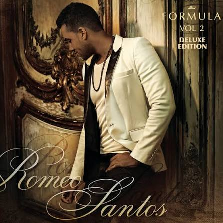
Cantantes
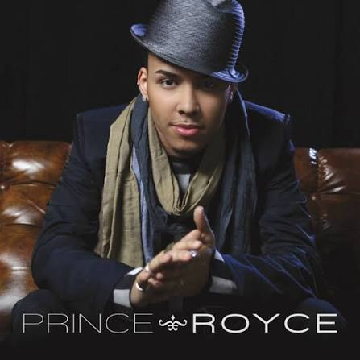
Prince Royce
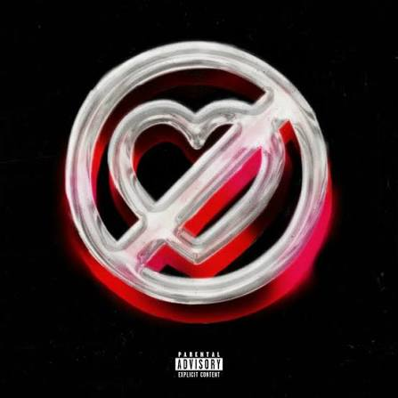
Fuerza Regida
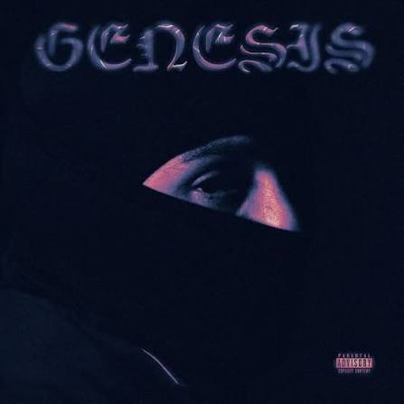
Peso Pluma
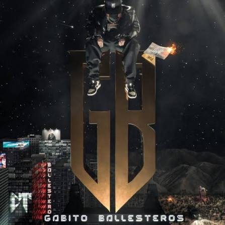
Gabito Ballesteros

Tito Double p
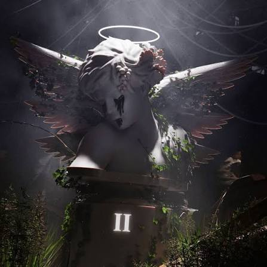
Junior H
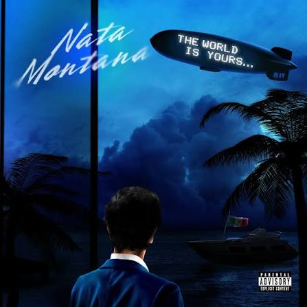
Natanael Cano
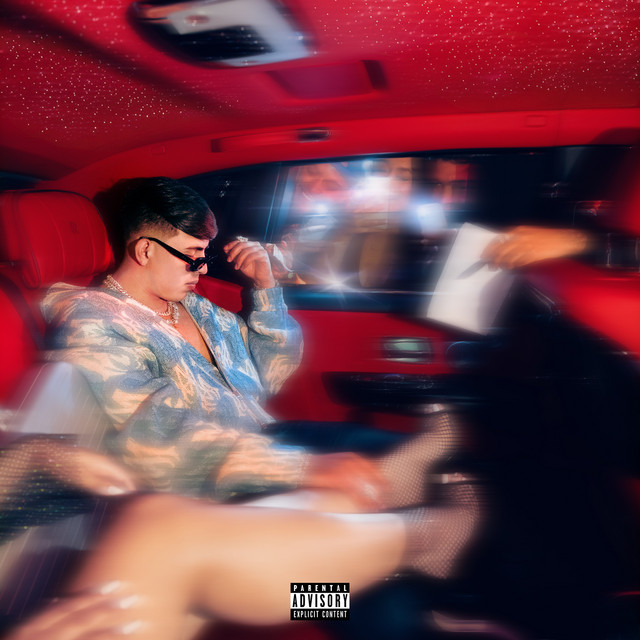
Oscar Maydon
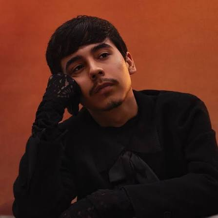
Ivan Cornejo
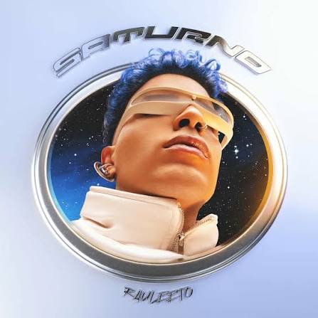
Rauw Alejandro
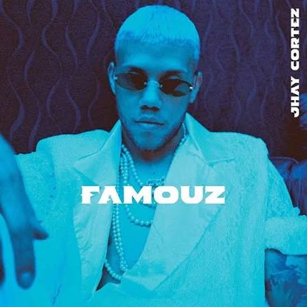
Jhayco
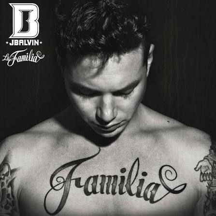
J Balvin
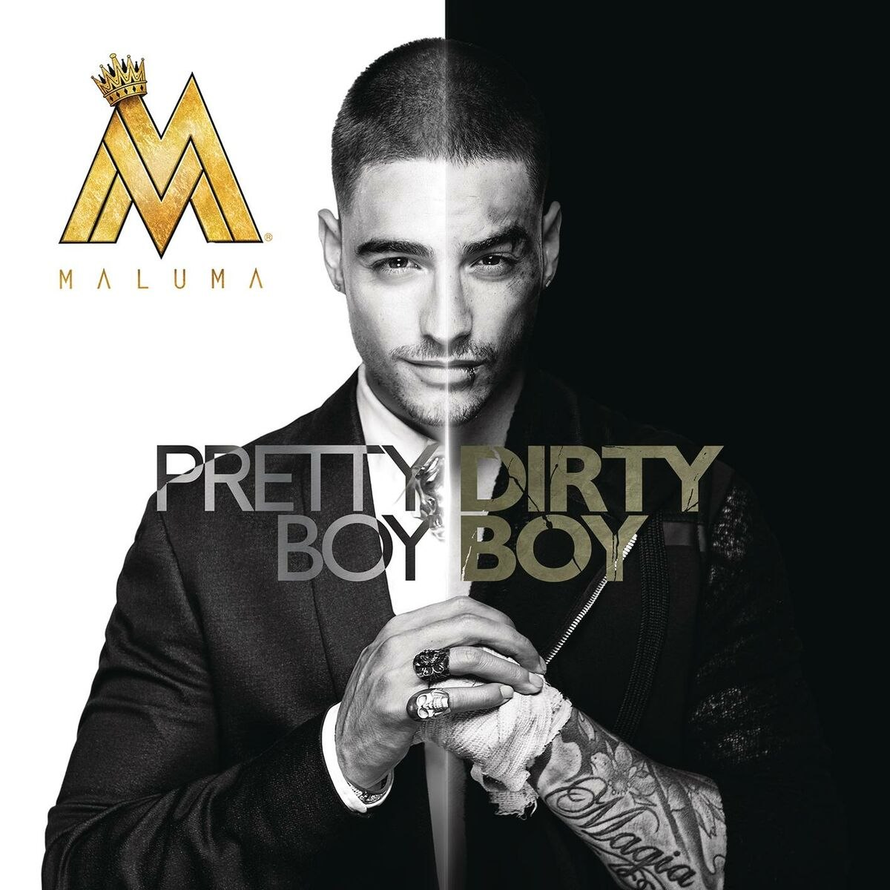
Maluma
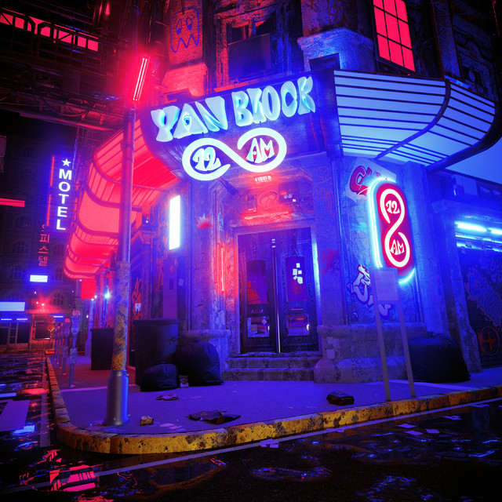
Yan Block
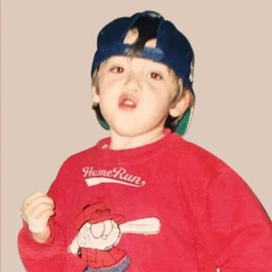
Paulo Londra
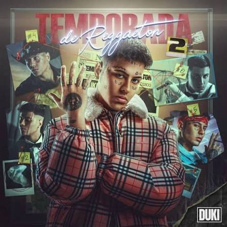
Duki
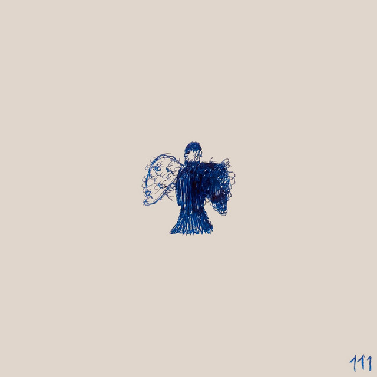
Milo J
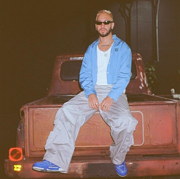
Mora
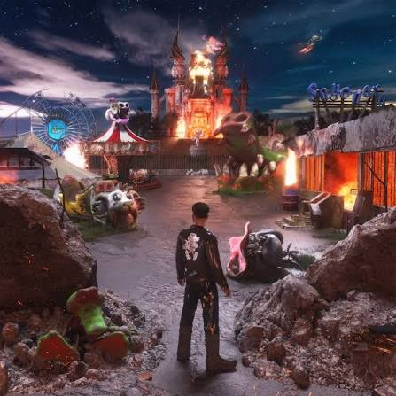
Alvaro Diaz
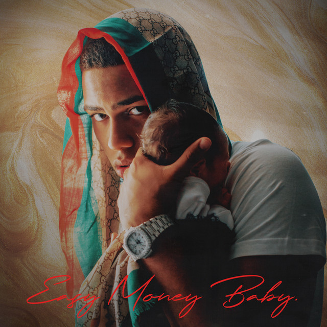
Myke Towers
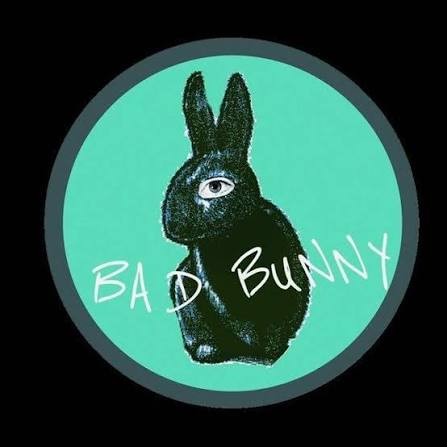
Bad Bunny
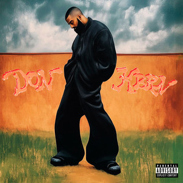
Eladio Carrion
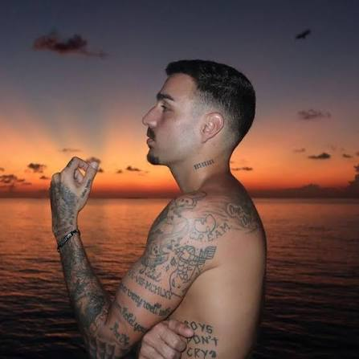
Rels B
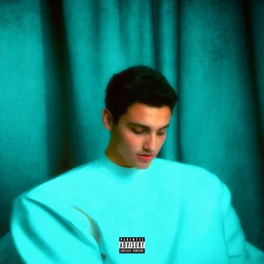
Humbe

The Weeknd

Joji
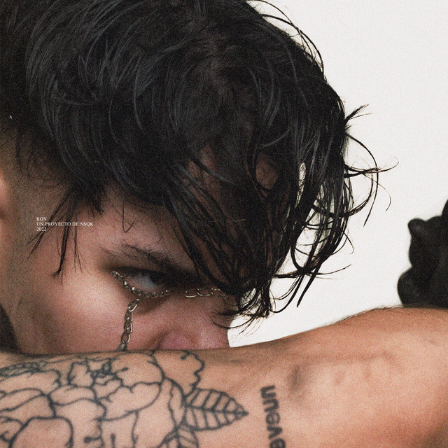
Nsqk
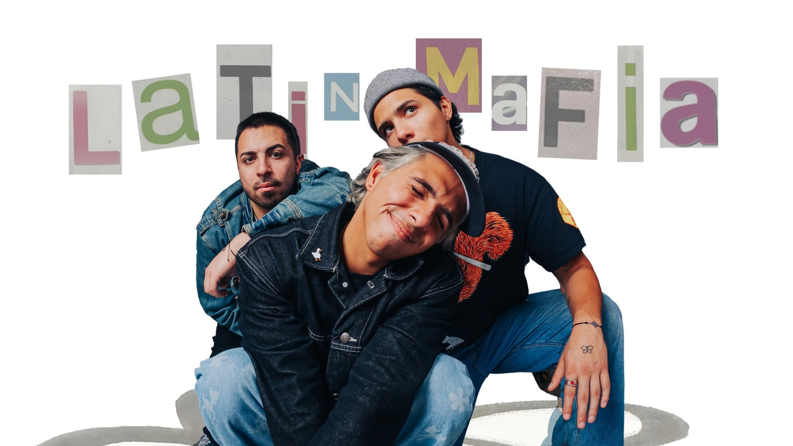
Latin Mafia
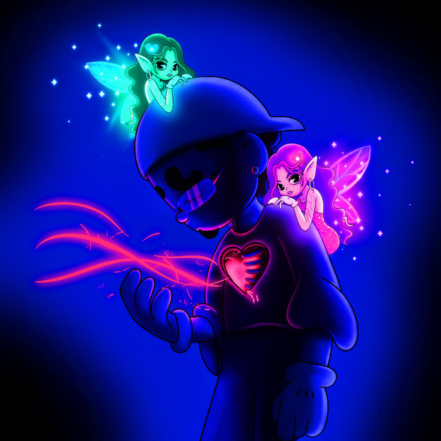
Omar courtz
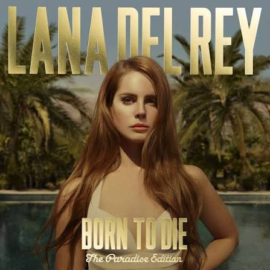
Lana del Rey
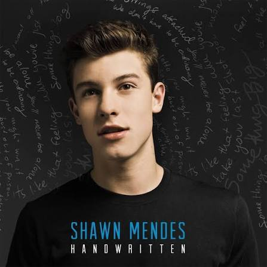
Shaw Mendes
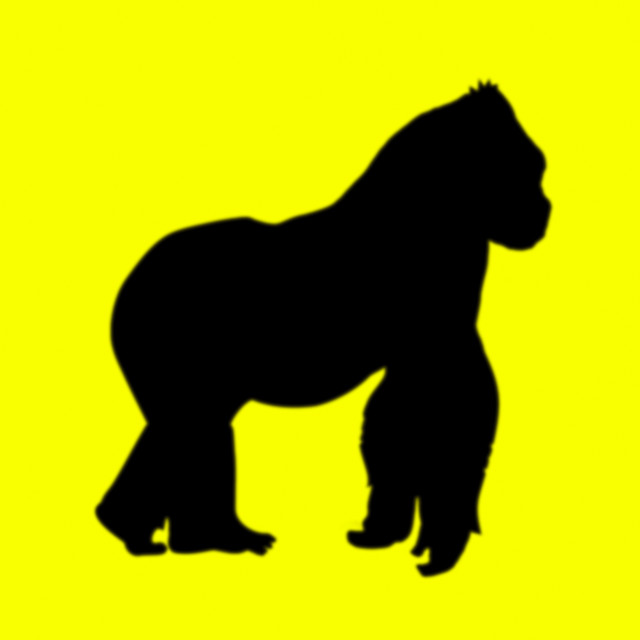
Rusowsky
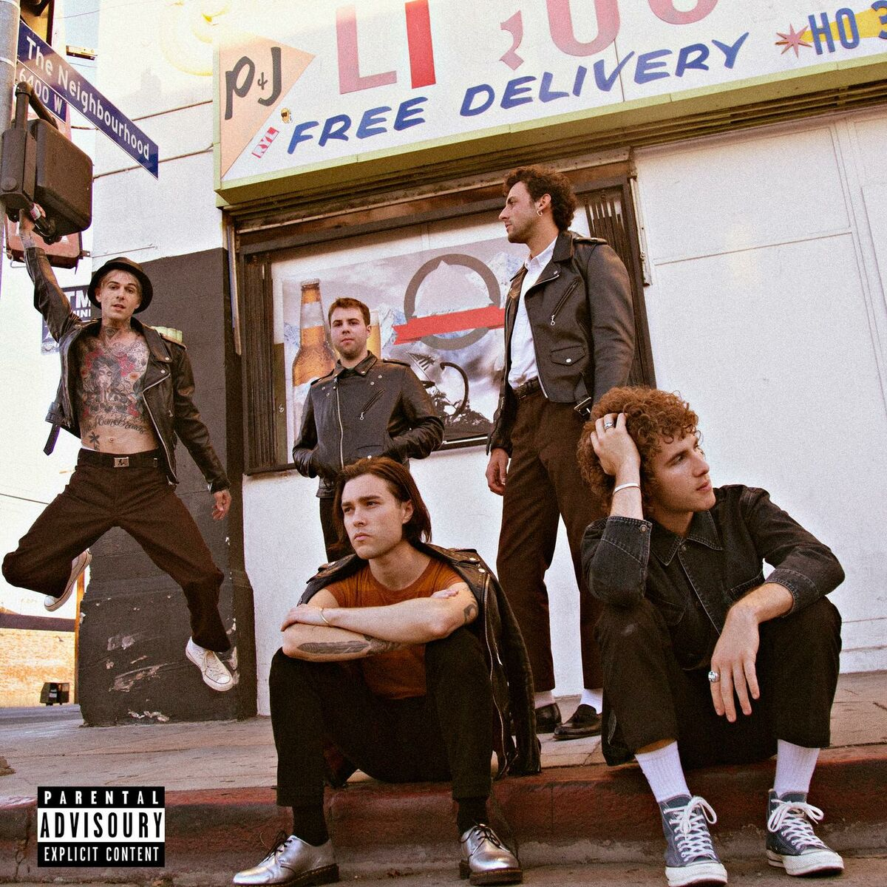
The Neighbourhood
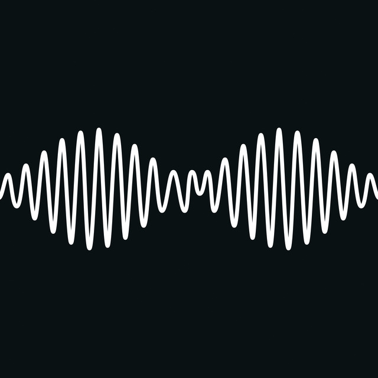
Arctic Monkeys
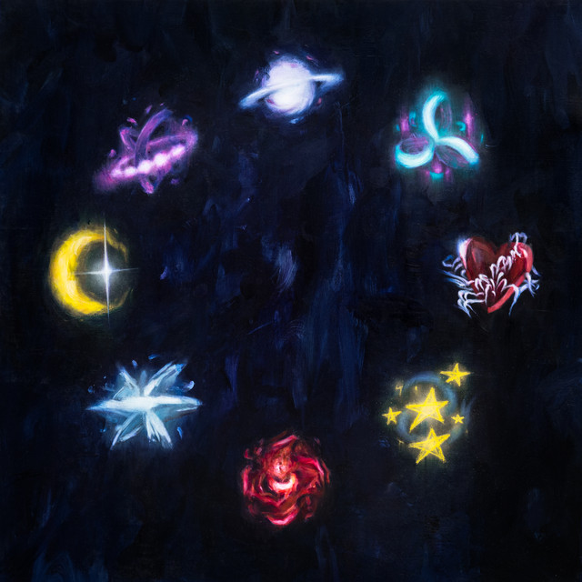